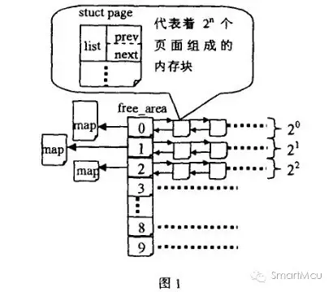
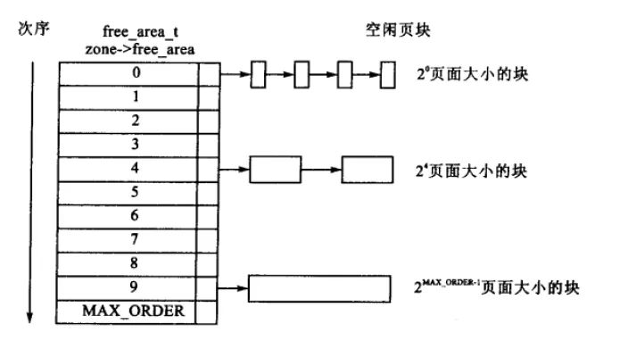
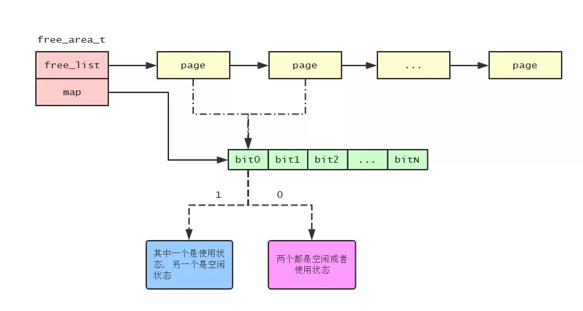
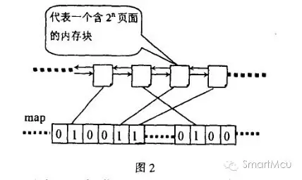
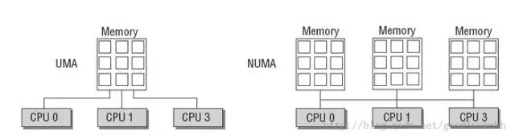
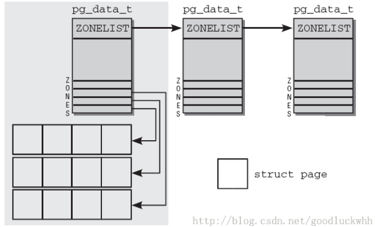

概述
- 本篇文档总结Linux伙伴系统
伙伴算法出现的原因
- 为了解决内存碎片问题
Linux中采用4KB大小的页框作为标准的内存分配单元，在实际应用中，经常需要分配一组连续的页框，而频繁的申请和释放不同大小的连续页框，必然导致在已分配页框的内存块中分散了许多小块的空闲页框，这样，即使这些页框是空闲的，其他需要分配连续页框的应用也很难得到满足.所以，内核应该为分配一组连续的页框而建立一种健壮，高校的分配策略。这样，内核就引入了伙伴算法。
伙伴算法的原理
Buddy的定义
这里给出伙伴的概念，满足以下三个条件的称为伙伴(Buddy)：
- 1）两个块大小相同；
- 2）两个块地址连续；
- 3）两个块必须是同一个大块中分离出来的；
那么给定一个 i 号内存页，怎么找到他的伙伴内存页呢？通过观察我们可以发现，如果页面号是复数的，那么他的伙伴内存页要加 1。如果页面号是单数的，那么他的伙伴内存页要减 1。所以，对于给定一个页面号为 i的内存页，他的伙伴内存页号可以使用以下的代码获得：
if (i & 1) {
buddy = i - 1
} else {
buddy = i + 1
}
Buddy算法的分配原理：
在同一个zone中, Linux把所有的空闲页框分组为11个块链表，每个链表上的页框块是固定的。在第i条链表中每个页框块都包含2的i次方个连续页，其中i称为分配阶。下面以2个例子，讲述伙伴算法的思想：
例子1
假设要申请一个256个页，先从256个页框的链表中查找空闲块，如果没有，就去512个页框的链表中找，找到了则将页框块分为2个256个页框的块，一个分配给应用，另外一个移到256个页框的链表中。如果512个页框的链表中仍没有空闲块，继续向1024个页框的链表查找。如果1024块存在，则将其中的256页框作为请求返回，剩余的768分成256块和512块分别插到相应的链表中。如果仍然没有，则返回错误。
例子2
假如系统需要4(2的2次方)个页面大小的内存块，该算法就到free_area[2]中查找，如果链表中有空闲块，就直接从中摘下并分配出去。如果没有，算法将顺着数组向上查找free_area[3],如果free_area[3]w中有空闲块，则将其从链表中摘下，分成等大小的两部分，前四个页面作为一个块插入free_area[2]，后4个页面分配出去，free_area[3]中也没有，就再向上查找，如果free_area[4]中有，就将这16(222*2)个页面等分成两份，前一半挂如free_area[3]的链表头部，后一半的8个页等分成两等分，前一半挂free_area[2]
的链表中，后一半分配出去。假如free_area[4]也没有，则重复上面的过程，知道到达free_area数组的最后，如果还没有则放弃分配。

核心结构体
Linux 内核将物理内存划分为 内存管理区(即zone_t) 进行管理，内存管理区使用结构体 zone_struct表示。
而在内存管理区数据结构中有个名为 free_area 类型为 free_area_t 的字段，他的作用就是用来管理内存管理区内的空闲物理内存页. 定义如下：
#define MAX_ORDER 10
typedef struct free_area_struct {
struct list_head free_list;
unsigned int *map;
} free_area_t;
typedef struct zone_struct {
...
free_area_t free_area[MAX_ORDER]; // 用于伙伴分配算法
...
} zone_t;
- 在旧版本内核中, 是
struct free_area - 在新版本内核中, 才使用
typdef ... free_area_t形式
free_area 是伙伴系统算法的核心，可以看到zone_t的 free_area属性 有10个元素。每个元素都是一个类型为 free_area_t 的结构体，free_area_t 结构的 free_list 字段用于连接有相同页面个数的内存块。map 字段是一个位图，用于记录伙伴内存块的使用情况。
Linux内核使用 free_area[i] 管理 2i 个内存页面大小的内存块列表，例如 free_area[0] 就是管理1个内存页面大小的内存块(20等于1)；而 free_area[1] 则管理2个内存页面大小的内存块(21等于2)。如下图所示：

管理物理内存页的 struct page 结构中有个 list 的字段，内核就是通过这个字段把有着相同个数页面的内存块连成一个链表的：
typedef struct page {
struct list_head list;
...
} mem_map_t;
前面我们说过，在 free_area_t 结构中有个名为 map 的字段，map 字段是一个位图，每个位记录着一对伙伴内存块的使用情况。举个例子，如果一对伙伴内存块中的某一个内存块在使用，那么对应的位就为 1，如果两个伙伴内存块都是空闲或者使用，那么对应的位就为 0。如下图：

使用位图来标识伙伴内存块使用情况的原因是: 当释放内存块时, 如果对应的位是1的话, 那么说明另外一个伙伴内存块是空闲状态的, 所以释放当前内存块可以跟其伙伴内存块合并成一个更大的内存块了.
Buddy算法的释放原理：
内存的释放是分配的逆过程，也可以看作是伙伴的合并过程。当释放一个块时，先在其对应的链表中考查是否有伙伴存在，如果没有伙伴块，就直接把要释放的块挂入链表头；如果有，则从链表中摘下伙伴，合并成一个大块，然后继续考察合并后的块在更大一级链表中是否有伙伴存在，直到不能合并或者已经合并到了最大的块。

整个过程中，位图扮演了重要的角色，如图2所示，位图的某一位对应两个互为伙伴的块，为1表示其中一块已经分配出去了，为0表示两块都空闲。伙伴中无论是分配还是释放都只是相对的位图进行异或操作。分配内存时对位图的 是为释放过程服务，释放过程根据位图判断伙伴是否存在，如果对相应位的异或操作得1，则没有伙伴可以合并，如果异或操作得0，就进行合并，并且继续按这种方式合并伙伴，直到不能合并为止。
Node、Zone、Page之间的关系

- 上图中, 每一个Memory部分, 在内核中使用
struct pg_data_t表示, 即是一个NUMA Node

- 每个Node下面, 有多个Zone, 每个Zone在内核中使用
struct zone_t表示. - 每个
struct zone_t下有一个free_area数组, 该数组中有11个元素. 每个元素是一个struct free_area_t, 每个free_area_t用链表关联了多个struct page, 并且符合free_area[i] 管理 2i 个内存页面大小的内存块列表. - 每个
struct page是代表4KB大小的内存页(页框), 几个page可以成为一个内存块, 内核分配物理内存时, 必须是内存块, 而且必须以2的几次方个page分配内存块, 因此最小是分配2的0次方个page的内存块, 大小为4KB. - 扩展: 当然如果内核代码仅仅需要小于4KB的内存时, 由著名的slab分配层解决.